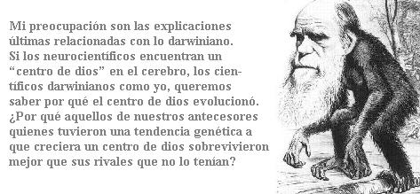

(Este artículo fue tomado de la revista Free Inquiry , Volumen 24, Número 5.)
Como darvinista, el aspecto de la religión que llama mi atención es su derroche libertino, su despliegue extravagante de inutilidad barroca. La naturaleza es un contador tacaño, enviando los centavos, observando el reloj, castigando el más mínimo desperdicio. Si un animal salvaje realiza habitualmente una actividad inútil, la selección natural favorecerá a los individuos rivales que a cambio dedican tiempo a sobrevivir y a reproducirse. La naturaleza soporta jeux d’esprits frívolos. El utilitarismo rudo triunfa, aunque no parezca.
“El hormigueo (Anting)” es el hábito raro de pájaros como el arrendajo que “al bañarse” en un nido de hormigas aparentemente incita a las hormigas a invadir sus plumas. Nadie sabe a ciencia cierta cuál es el beneficio de esto: tal vez sea algo de higiene, limpieza de parásitos en las plumas. Mi punto es que la incertidumbre como propósito no-ni debe-hacer que los darvinistas dejen de creer, con gran confianza, que el “hormigueo”, debe ser bueno para algo.
La conducta religiosa en simios bípedos ocupa grandes cantidades de tiempo. Devora grandes recursos. Una catedral medieval consumía cientos de hombres y siglos en su construcción. La música sagrada y las pinturas devocionales monopolizaron enormemente el talento medieval y el del Renacimiento. Miles, talvez millones, de personas han muerto, con frecuencia aceptando primero la tortura, por la lealtad a una religión contra una alternativa que apenas se distinguía. Gente devota ha muerto por sus dioses, asesinado por ellos, ayunado por ellos, soportado azotes, llevado una vida de celibato y jurado silencio por el bien de la religión.
Aunque los detalles varían según las culturas, ninguna cultura conocida carece de una versión de los rituales religiosos del paso del tiempo, consumo de riqueza, provocación de hostilidad, pérdida de la fecundidad. Todo esto presenta un mayor rompecabezas para alguien que piensa de manera darvinista. Adivinamos por qué los arrendajos utilizan las hormigas. ¿No es la religión un reto similar, una afrenta a priori al darwinismo, que requiere de una explicación análoga? ¿Por qué rezamos y cedemos en prácticas costosas que, en muchos casos individuales, más o menos consumen totalmente nuestras vidas?
Por supuesto, los cavernícolas deben ahora venir dando tumbos. La conducta religiosa es solamente un asunto darvinista si se extiende, no alguna anomalía extraña. Aparentemente, es universal, y el problema no se ve solamente porque los detalles cambien con las culturas. Como con el lenguaje, el fenómeno subyacente es universal, aunque se interpreta de manera diferente en diferentes regiones. No todos los individuos son religiosos, como la mayoría de los lectores de esta revista pueden atestiguar. Pero la religión es un universal humano: cada cultura, en cualquier lugar del mundo, tiene un estilo de religión que aún los no practicantes reconocen como norma para esa sociedad, así como se tiene un estilo de vestir, un estilo de cortejar y un estilo de servir la comida. ¿Para qué es buena la religión?
Hay poca evidencia de que las creencias religiosas protejan a las personas de enfermedades relacionadas con el estrés. La evidencia no es buena, pero no sería del todo tan sorprendente. Una parte no-insignificante de lo que un doctor puede darle a un paciente es consuelo y seguridad. Mi doctor no practica literalmente la imposición de manos. Pero muchas veces he sido instantáneamente sanado de alguna enfermedad menor por una voz calmada y tranquilizante de un rostro inteligente superando un estetoscopio. El efecto placebo está bien documentado. Pastillas ficticias, sin ninguna actividad farmacéutica, mejoran la salud demostrablemente. Es por eso que las pruebas de drogas utilizan placebos como controles. Es por eso que los remedios homeopáticos parecen funcionar, aunque ellos están tan diluidos que contienen la misma cantidad de ingrediente activo que el placebo de control-cero moléculas.
¿Es la religión un placebo médico, que prolonga la vida reduciendo el estrés? Tal vez, aunque la teoría va a tener que aceptar el reto de los escépticos quienes señalan las muchas circunstancias en las que la religión aumenta el estrés más que lo que lo disminuye. En cualquier caso, encuentro la teoría del placebo muy exigua para tener en cuenta el fenómeno masivo o persuasivo de la religión. No pienso que tengamos la religión porque nuestros antecesores religiosos redujeron sus niveles de estrés y por lo tanto sobrevivieron más. No pienso que ésta sea una teoría lo suficientemente grande para la tarea.
Otras teorías se desvían del punto de las explicaciones darvinistas. Me refiero a sugerencias como, “La religión satisface nuestra curiosidad acerca del universo y nuestro lugar en él.” O “La religión es consuelo. La gente le teme a la muerte y están enredados en religiones que prometen que la sobreviviremos.” Puede haber algo de verdad sicológica en esto, pero no es en sí misma una explicación darvinista. Como lo ha dicho Steven Pinker en How the Mind Works (Cómo trabaja la mente) (Penguin, 1997):
… sólo surge la pregunta de por qué una mente evolucionará para encontrar confort en creencias que claramente ve que son falsas. Una persona yerta no encuentra confort creyendo que está tibia; una persona cara a cara con un león no se apacigua creyendo que es un conejo. (p. 555)
Una versión darvinista de la teoría del miedo a la muerte tendría que ser de la manera, “La creencia en la supervivencia después de la muerte tiende a posponer el momento en el que se pone a prueba.” Esto podría ser cierto o falso-talvez esta sea otra versión del estrés y de la teoría del placebo-pero no debo seguirla. Mi punto es que ésta es la clase de camino en el que un darvinista debe rescribir la pregunta.
Los planteamientos sicológicos al efecto de que la gente encuentre alguna creencia agradable o desagradable son aproximados, no explicaciones últimas. Como darvinista me preocupan las preguntas últimas.
Los darvinistas resaltan la distinción entre próxima y última. Las preguntas próximas nos conducen a la sicología y neuroanatomía. No hay nada de malo con las explicaciones próximas. Son importantes y científicas. Pero mi preocupación son las explicaciones últimas relacionadas con lo darvinista. Si los neurocientíficos encuentran un “centro de dios” en el cerebro, los científicos darvinistas como yo, queremos saber por qué el centro de dios evolucionó. ¿Por qué aquellos de nuestros antecesores quienes tuvieron una tendencia genética a que creciera un centro de dios sobrevivieron mejor que sus rivales que no lo tenían? La pregunta última darvinista no es una mejor pregunta, no es una pregunta más profunda, no es una pregunta más científica que la pregunta próxima neurológica. Pero es de la que hablo aquí.
Algunas últimas supuestas explicaciones pasan a ser -o son declaradas- teorías de selección de grupos. La selección de grupos es la idea controversial de que la selección darvinista elige entre grupos de individuos, en la misma forma que, de acuerdo con la teoría darvinista normal, elige entre individuos en los grupos. El antropólogo de Cambridge Colin Renfrew, por ejemplo, sugiere que la Cristiandad sobrevivió por una forma de selección por grupos ya que esto promovió la idea de la lealtad y el amor fraterno entre grupos. El evolucionista Americano David Sloan Wilson ha hecho una sugerencia similar en la Catedral de Darwin.
Este es un ejemplo, para mostrar otra forma en la cual la teoría de la selección por grupos de la religión podría funcionar. Una tribu con un “dios de las batallas” conmovedoramente beligerante gana las guerras contra una tribu cuyo dios pide paz y armonía o una tribu sin ningún dios. Los guerreros que creen que la muerte de un mártir los enviará derecho al paraíso luchan valientemente y deseosos de dar sus vidas. De modo que es más probable que su tribu sobreviva a una selección entre tribus, robe el ganado de la tribu que conquistó y tome a sus mujeres como concubinas. Esas tribus exitosas crean otras tribus hijas que salen y propagan más tribus hijas, todas venerando al mismo dios de la tribu. Note que es diferente a decir que la idea de una religión guerrera sobreviva. Claro que lo hará, pero en este caso el punto es que el grupo de personas que sostienen la idea sobreviven.
Hay objeciones formidables a las teorías de la selección de grupos. Pero debo tratar de alejarme de estas en esta columna. Los modelos matemáticos sugieren condiciones muy especiales bajo las cuales la selección de grupos puede funcionar. Podría decirse que las religiones en las tribus humanas establecen dichas condiciones especiales. Esta es una línea interesante de la teoría para seguir, pero no lo haré aquí.
¿Puede la religión ser un fenómeno reciente, que surgió desde que nuestros genes fueron sometidos a la selección natural? Su ubicuidad va contra cualquier versión simple de esta idea, No obstante, existe una versión de ésta que quiero defender. La propensión de que lo que fue naturalmente seleccionado en nuestros antecesores no fue la religión per se. Tiene otros beneficios, y solo se manifiesta incidentalmente hoy como conducta religiosa. Entenderemos esta conducta religiosa solamente después de haberla renombrado. Es natural para mí como zoologista utilizar una analogía de los animales no humanos.
La “jerarquía de dominación” fue descubierta primero como el “orden de picoteo” en las gallinas. Cada gallina aprende qué individuos puede picotear en una lucha y cuáles lo picotearán. En una jerarquía de dominación bien establecida, se puede ver una lucha poco evidente. Grupos estables de gallinas, que han tenido la oportunidad de clasificarse en un orden de picoteo, ponen más huevos que en gallineros cuya afiliación cambia continuamente. Esto puede sugerir una “ventaja” para el fenómeno de la jerarquía de dominación. Pero este no es un buen darwinismo, ya que la jerarquía de dominación es un fenómeno a nivel de grupos. Los granjeros pueden cuidar la productividad del grupo, pero, excepto bajo condiciones muy peculiares que no aplican aquí, la selección natural no lo hace.
Para un darvinista, la pregunta “¿Cuál es el valor de supervivencia de la jerarquía de dominación?” no es legítima. La pregunta adecuada es, “¿Cuál es el valor de supervivencia individual de deferencia para las gallinas más fuertes? Y de castigar la falta de deferencia de las más débiles.” Las preguntas darvinistas tienen que dirigir la atención hacia el nivel en el cual las variaciones genéticas puedan existir. Las tendencias agresivas o deferentes en gallinas son un objetivo adecuado ya que ellas varían o pueden variar fácilmente genéticamente. Los fenómenos de grupos como jerarquía de dominación no varían en sí genéticamente, puesto que los grupos no tienen genes. O por lo menos usted tendría su trabajo detenido argumentando un sentido peculiar en el cual un fenómeno de grupo pudiera estar sujeto a variación genética.
Mi punto, por supuesto, es que la religión puede ser como la jerarquía de dominación. “¿Cuál es el valor de supervivencia de la religión?” puede ser la pregunta equivocada. La pregunta correcta puede ser, “¿Cuál es el valor de supervivencia tanto de una conducta individual o característica sicológica no especificada todavía, que se manifiesta, bajo circunstancias apropiadas, como de la religión?” Tenemos que rescribir la pregunta antes de responderla sensatamente.
Los darvinistas que buscan el valor de supervivencia de la religión se están haciendo la pregunta equivocada. En cambio, nos debemos centrar en algo en la evolución de nuestros antecesores que no hubiera sido reconocido como religión, pero que está listo para ser reconocido como tal en contexto modificado de la sociedad civilizada.
Cité el orden de picoteo en las gallinas, y el punto es muy importante para mi tesis que espero que usted perdone otro ejemplo de animal. Las polillas vuelan por encima de la llama de una vela y no parece un accidente. Ellas se salen de su camino para hacer de ellas mismas una ofrenda. Podemos llamar a esto “conducta de auto inmolación” y preguntarnos cómo la selección natural darvinista podría favorecerla. Mi punto, de nuevo, es que necesitamos rescribir la pregunta antes de poder si quiera dar una respuesta inteligente. No es suicidio. El suicidio aparente surge como un efecto colateral inadvertido.
La luz artificial es una llegada reciente en la escena nocturna. Hasta hace poco, las únicas luces nocturnas eran la luna y las estrellas. Estando en infinidad óptica, sus rayos son paralelos, lo que los hace compases ideales. Se sabe que los insectos utilizan los objetos celestiales para guiarse con exactitud en una línea recta. El sistema nervioso de los insectos es experto en establecer una regla temporal de reconocimiento como, “Establecer un curso tal que los rayos de luz lleguen a sus ojos a un ángulo de 30°.” Debido a que los insectos poseen ojos compuestos, esto sumará para favorecer un omatidio particular (tubo óptico individual que sale de la parte del centro del ojo compuesto).
Pero el compás de luz cuenta con el objeto celestial que está en la infinidad óptica. De lo contrario, los rayos no están paralelos sino que divergen como los radios de una rueda. Un sistema nervioso que utiliza una regla de 30° hacia una vela, como si fuera la luna, guiará a la polilla, en un espiral logarítmico puro, hacia la flama.
Es aún, en promedio, una buena regla. No notamos los cientos de polillas que silenciosamente y efectivamente están guiándose por la luna o una estrella luminosa o es más, por las luces de una ciudad distante. Solamente vemos polillas que se lanzan hacia nuestras luces y nos hacemos la pregunta incorrecta. ¿Por qué todas esas polillas están suicidándose? En cambio, debemos preguntarnos por qué ellas tienen sistemas nerviosos que se guían manteniendo un ángulo fijo automático hacia los rayos de luz, una táctica que sólo notamos en ocasiones cuando va mal. Cuando se replantea la pregunta, desaparece el misterio. Nunca estuvo bien llamarlo suicidio.
Una vez más aplica la lección para la conducta religiosa en humanos. Observamos gran número de personas -en muchas áreas locales suman hasta el 100 por ciento- que mantienen creencias que contradicen de lleno hechos científicos demostrables, así como a religiones rivales. Ellas no sólo sostienen estas creencias sino que dedican tiempo y recursos a actividades costosas que surgen de mantenerlas. Mueren o matan por ellas. Nos asombramos ante todo esto, así como nos maravillamos de la conducta de inmolación de las polillas. Desconcertados, nos preguntamos “¿Por qué?” Aún de nuevo, el punto es que podemos estar haciéndonos la pregunta incorrecta. La conducta religiosa puede ser una falla, una manifestación desafortunada de una propensión sicológica subyacente que en otras circunstancias fue una vez útil.
¿Qué podría haber sido esa propensión sicológica? ¿Cuál es el equivalente de utilizar los rayos paralelos de la luna como compás útil? Ofreceré una sugerencia, pero debo hacer énfasis que es sólo un ejemplo de la clase de cosas de las que estoy hablando. Estoy mucho más comprometido con la idea general de que la pregunta debe ser replanteada correctamente que con lo que estoy en dar una respuesta en particular.
Mi hipótesis específica tiene que ver con los niños. Más que otras especies, sobrevivimos debido a la experiencia acumulada de las generaciones previas. Teóricamente, los niños deben aprender de la experiencia para no nadar en aguas infestadas de cocodrilos. Pero para decir lo menos, habrá una ventaja selectiva en los cerebros de los niños con la regla: Crea lo que sus mayores le digan. Obedezca a sus padres, obedezca a los ancianos de la tribu, especialmente cuando adopten un tono solemne. Obedezca sin preguntar.
Nunca he olvidado un sermón horroroso, predicado en la capilla de mi escuela cuando era pequeño. Fue horroroso: en ese entonces, mi cerebro de niño lo aceptó como lo pretendía el predicador. Él contó la historia de un grupo de soldados, que entrenaba a lado de una línea del ferrocarril. En un momento crítico, el sargento que dirigía el entrenamiento se distrajo y olvidó dar la orden de detenerse. Los soldados que habían sido bien entrenados para obedecer órdenes sin preguntar continuaron marchando justo en la vía en la que venía un tren. Ahora, por supuesto, no creo la historia, pero lo hice cuando tenía nueve años. El punto es que el predicador quería que nosotros los niños consideráramos como virtud el servilismo de los soldados y la obediencia incuestionable hacia una orden, por demás absurda. Y, hablando por mí, pienso que lo consideramos como una virtud. Me pregunto si yo hubiera tenido el coraje de cumplir con mi deber marchando hacia el tren.
Como los soldados entrenados idealmente, los computadores hacen lo que se les dice. Ellos obedecen servilmente las instrucciones que se les den correctamente en su lenguaje de programación. Es así como realizan cosas útiles como procesar palabras y hacer hojas de cálculo. Pero, como producto inevitable, son igualmente automáticos al obedecer malas instrucciones. No tienen forma de decir si una instrucción tendrá un efecto bueno o malo. Simplemente obedecen, como se suponen que hacen los soldados.
Es su obediencia incuestionable lo que hace que un computador sea vulnerable a la infección de virus. Un programa diseñado maliciosamente que diga “Cópieme en todo nombre en cualquier lista de direcciones que encuentre en este disco duro” será obedecido sencillamente y obedecido nuevamente por otros computadores a los cuales se les envíe, de manera exponencial. Es imposible diseñar un computador que sea obediente y al mismo tiempo inmune a la infección.
Si he hecho mi trabajo bien, usted ya habrá completado el argumento acerca del cerebro de los niños y la religión. La selección natural construye los cerebros de los niños con una tendencia a creer lo que sus padres y ancianos de la tribu les digan. Y esta cualidad los hace automáticamente vulnerables a la infección. Por excelentes razones de supervivencia, los cerebros de los niños necesitan confiar en sus padres y en los ancianos a los cuales sus padres les dijeron que debían confiar. Una consecuencia automática es que “el que confía” no tiene forma de distinguir entre un buen consejo y uno malo. El niño no puede decir que “Si nada en el río será alimento de los cocodrilos” es un buen consejo pero que “El que no arriesga un huevo no tiene un pollo” es un mal consejo. Estos suenan igual. Ambos consejos vienen de fuentes confiables y están dichos con una seriedad solemne que exige respeto y requiere obediencia.
Lo mismo aplica para las proposiciones acerca del mundo, el cosmos, la moralidad y la naturaleza humana. Y, por supuesto, cuando el niño crece y tiene sus propios hijos, naturalmente les pasará toda la suerte a sus hijos utilizando las mismas sentencias impresionantes.
En este modelo, esperamos que, en diferentes regiones geográficas, diferentes creencias arbitrarias que no tienen una base real sean transmitidas, para que sean creídas con la misma convicción que los conocimientos útiles de la sabiduría tradicional tales como la creencia de que el estiércol es bueno para los cultivos. También debemos esperar que estas creencias que no están basadas en los hechos evolucionarán por generaciones, aleatoriamente o siguiendo alguna clase de analogía de la selección darvinista, mostrando eventualmente un patrón de divergencia significativa de los ancestros comunes. Los lenguajes se van distanciando de un origen común dado el tiempo suficiente en la separación geográfica. Igualmente verdaderas son las creencias tradicionales y los requerimientos judiciales transferidos por generaciones, inicialmente debido a la capacidad de programación del cerebro de un niño.
La selección darvinista establece que el cerebro en la niñez tiene una tendencia a creer en sus ancianos, a imitar, por lo tanto indirectamente a extender rumores, leyendas urbanas y a creer en religiones. Pero dado que la selección genética ha creado los cerebros para esto, entonces ellos pueden proporcionar el equivalente de una nueva clase de herencia no genética, que puede formar la base de una nueva clase de epidemiología y talvez una nueva clase de selección darvinista no genética. Yo creo que la religión es uno de los grupos de fenómenos explicados por esta clase de epidemiología no genética, con la posible mezcla de una selección darvinista no genética. Si estoy en lo correcto la religión no tiene un valor de supervivencia para los seres humanos individuales ni para el beneficio de sus genes. El beneficio si existiera no sería la religión en sí

Le invitamos a leer otros ensayos de Richard Dawkins publicados en Sindioses.org:

Richard Dawkins es biólogo evolutivo, nació en Nairobi, Kenya, en 1941 y se educó en la Universidad de Oxford. Comenzó su carrera como investigador en los 60, estudiando bajo la dirección del etólogo Nico Tinbergen, ganador del premio Nóbel, y desde entonces su trabajo ha girado en torno a la evolución del comportamiento. Ha obtenido las cátedras Gifford de la Universidad de Glasgow y Sidwich del Newham College de Cambridge. Además ha sido profesor de zoología de las universidades de Oxford y California, ha presentado programas de la BBC y dirigido varias publicaciones científicas. En 1995 se convirtió en el primer titular de la recién creada cátedra Charles Simony de Divulgación Científica en la Universidad de Oxford. Autor de obras muy leídas como:
El gen egoísta (1976; segunda edición, 1989; tercera, 2006)
El fenotipo extendido (1982)
El relojero ciego
El río del Edén (1995)
Escalando el monte improbable (1996)
Destejiendo el arco iris (1998) — Dawkins, con ironía pero también con rigor científico, se enfrenta a las pseudociencias mostrando lo que son: fraude, ilusión, alucinación, error o embuste.
El capellán del diablo (2003)
The Ancestor’s Tale: A Pilgrimage to the Dawn of Evolution (2004); El cuento del antepasado: un viaje a los albores de la evolución (2008)
The God Delusion (2006); El espejismo de Dios (2007)
The Greatest Show on Earth: The Evidence for Evolution (2009) (Evolución. El mayor espectáculo sobre la Tierra)
Volver a la sección Examinando las religiones
Comentarios
Comments powered by Disqus